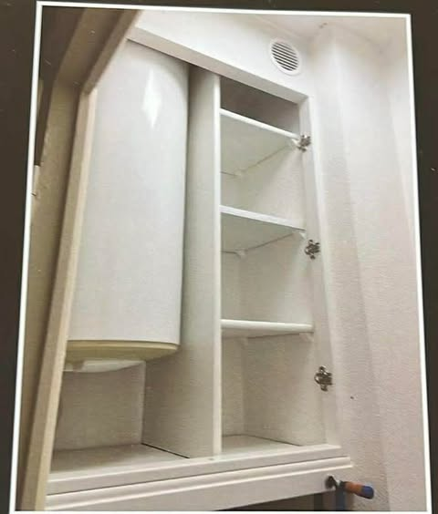
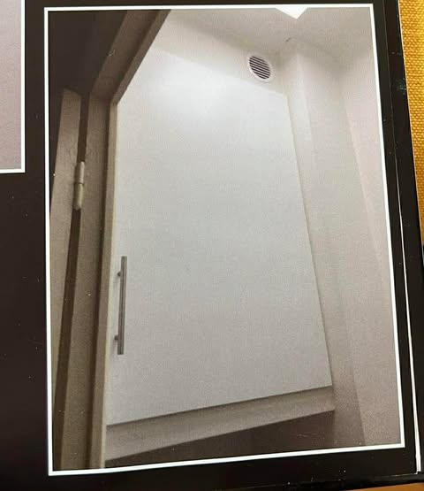
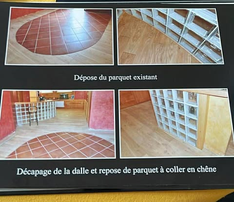
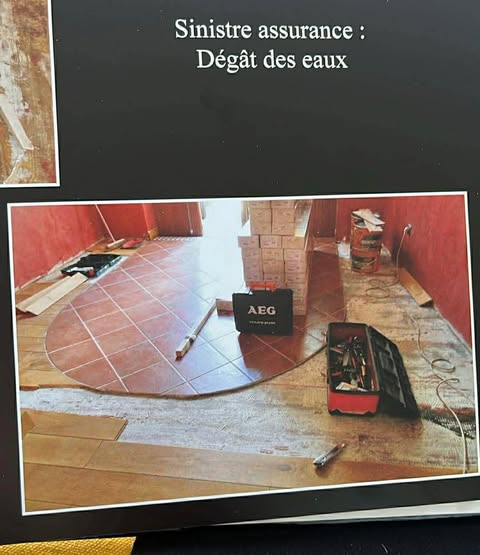

Menuiseries interieures et exterieures, dressings sur mesure, parquets, placards, restauration. Un savoir-faire artisanal adosse a 15 ans d'experience commerciale dans le secteur.
Distinction MAAF : assure depuis plus de 5 ans, avec zero sinistre declare en garantie decennale. Gage de fiabilite et de travail soigne.
Distinction MAAF : assure depuis plus de 10 ans, avec zero sinistre declare en garantie decennale. Le plus haut niveau de confiance.
Un profil rare : la precision de l'artisan et le sens du client d'un ancien responsable de magasin.
Je suis artisan menuisier installe depuis 2003 dans la region lyonnaise et le Beaujolais. Je realise la depose et repose de menuiseries interieures et exterieures, la pose de parquets, la creation de dressings et placards sur mesure, ainsi que la restauration d'huisseries.
Avant de m'installer a mon compte, j'ai passe 15 ans en responsabilite commerciale chez Lapeyre et dans le secteur de la menuiserie industrielle. Je connais les materiaux, les fournisseurs, les normes — et surtout, je sais ecouter un client pour traduire son besoin en realisation concrete.
Ancien ebeniste de formation, je maitrise aussi la restauration de meubles anciens et le travail du bois noble. C'est cette double casquette — artisan minutieux et professionnel structure — qui fait ma difference.
Plus de 20 ans a mon compte, interventions Lyon & Beaujolais
Vial, Bati Eco, Lapeyre — gestion, commerce, equipes
CAP Menuisier & Agencement — Paris, reference nationale
Restauration de meubles anciens, travail du bois noble
De la fenetre au dressing, du parquet a la restauration — tout le bois, c'est mon domaine.
Depose et repose de fenetres, portes d'entree, volets, baies vitrees. Renovation ou neuf. Materiaux adaptes a votre habitat et a votre budget.
Portes interieures, huisseries, encadrements, moulures. Remplacement sans degradation du bati existant. Finitions soignees, proprete du chantier.
Amenagement sur mesure de vos espaces de rangement. Dressings, placards sous pente, bibliotheques, niches. Conception adaptee a votre interieur.
Pose, depose, renovation de parquets massifs, contrecolles et stratifies. Preparation du support, pose clouee, collee ou flottante. Finitions huilees ou vitrifees.
Restauration de meubles anciens, travaux d'ebenisterie, sculpture sur bois. Formation Ecole Boulle. Respect des techniques traditionnelles et du bois d'origine.
40 ans d'experience dans le secteur, ancien responsable de magasin : je vous conseille sur les materiaux, les solutions adaptees a votre budget, et je coordonne le chantier de A a Z.
Quelques exemples de travaux realises dans la region lyonnaise et le Beaujolais.

SUR MESURECreation complete d'un placard encastre dans un espace sous pente. Etageres, penderie et rangements optimises. Finition blanc laque, charnieres invisibles.

ENCASTREMENTFabrication et pose d'une porte sur mesure encastree dans un espace non standard. Ajustement au millimetre, poignee inox. Finition blanc mat.

PARQUET CHENEDepose du parquet existant autour d'un sol en tomettes. Decapage complet de la dalle. Repose de parquet a coller en chene massif. Integration d'un meuble de rangement vitre.

SINISTREIntervention post-sinistre : depose du parquet endommage, sechage, preparation du support, repose complete. Coordination avec l'assurance. Chantier sous contrainte de delai.
De l'ebenisterie a la responsabilite de magasin, puis artisan a mon compte.
Depose et repose de menuiseries interieures et exterieures. Parquets, dressings, placards sur mesure. Remplacement d'huisseries sans degradation.
Direction complete du point de vente. Gestion du personnel, actions commerciales, analyse concurrence, gestion des stocks.
Direction du magasin et supervision de 5 ateliers de menuiseries pour l'ensemble du groupe. Actions commerciales, suivi de la concurrence.
Gestion des stocks, litiges clients, formation et encadrement des forces commerciales. Conduite de reunions.
Gestion quantitative et qualitative du stock. Formation technique des vendeurs.
Vente aux particuliers et professionnels. Animation des stands aux Foires de Lyon et Saint-Etienne.
Restauration de meubles anciens. Mise en place des salons professionnels.
Ecole Boulle — Paris (1980)
Communication & management (1997)
Techniques commerciales terrain
Direction d'equipes & magasin
Un devis, une question, un conseil — n'hesitez pas a me contacter.
Devis gratuit, reponse rapide. Appelez directement ou laissez un message.
Appeler maintenant